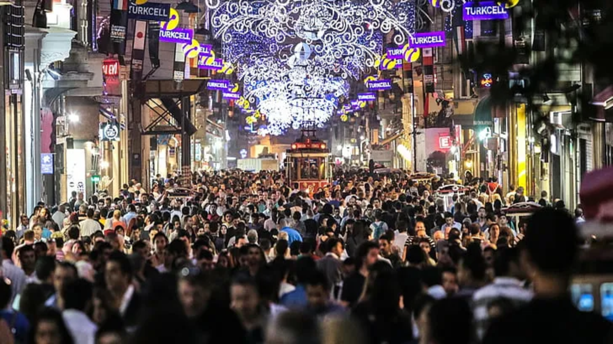
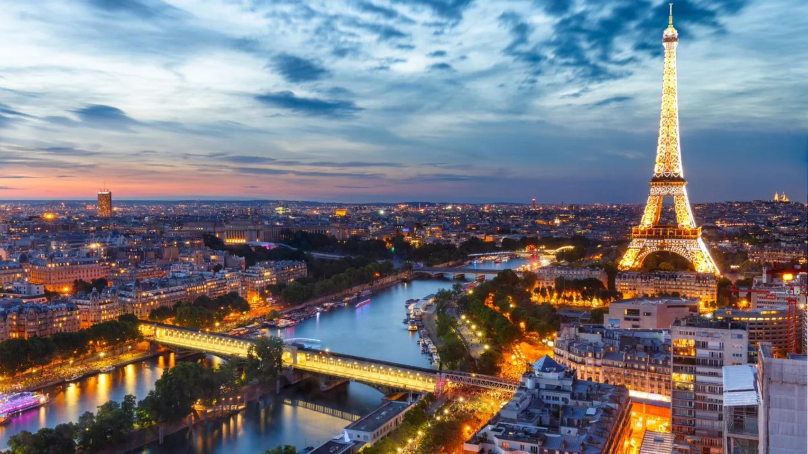

PLACES TO VISIT
Today We'll look at some cool place in the world.
Let's check.
Istanbul

With colourful alleys, scenic locations, vintage cafes, shopping streets, night cruises and cultural performances, the capital of Turkey has a lot to offer! This city has great historical, religious and cultural significance. There are a lot of boat tours, bus tours, walking tours and more provided to know all about the city. Make sure you book a local guide or read up about the key places in advance so that you know what all there is to be covered.
The must-visit spots of this city include many religious places like the Dolmabahce Palace, Suleymaniye mosque, The Blue Mosque, Hagia Sophia Mosque, Sultanahmet district, The Grand Bazaar, Basilica Cistern, Topkapi Palace, The Galata Tower and more.
Paris

The City of Light draws millions of visitors every year with its unforgettable ambiance. Of course, the divine cuisine and vast art collections deserve some of the credit as well. The gentle River Seine rambles through the city, flanked by stately museums, centuries-old churches, and blocks of Rococo- and Neoclassic-design architecture, further enhanced by cascading trees and glowing streetlamps. Peppering the Seine's cobbled walks and graceful bridges are impossibly chic Parisians, probably on their way to the market, cafe or cinema.
Containing world-class museums, fashion, cuisine and an atmosphere all its own, Paris is also a city of "many splendors," as Ernest Hemingway recalled in his memoir, "A Moveable Feast." Visit the beloved Musée d'Orsay, shop the biggest designers on the Champs Élysées or hit the boutiques in Le Marais, take in the view atop the Eiffel Tower, or even plan a day trip to Versailles Palace. But don't miss out on the simple pleasure of meandering the marvelous arrondissements (districts), or snacking on street crepes either.
Maldives
You've seen photos of the Maldives before: picture-perfect private villas suspended over striking blue waters, alabaster white sand beaches and spectacular sunsets dipping into the horizon. The scenic beauty of the Maldives is something to behold, something you can't quite understand until you're there in person.
The island nation of the Maldives is popular with honeymooners looking for seclusion and adventurers looking to explore the depths of the sea on a scuba diving and snorkeling excursion. Travelers seeking relaxation can unwind at one of the island spas and all visitors should certainly spend a day exploring the Maldivian capital of Malé. The hotels in this region are also spectacular, ranging from underwater hotels to overwater bungalows to incredibly beautiful resorts. However, getting to and staying in this tropical paradise requires patience (there are no direct flights from the United States) and plentiful cash. Located between the Arabian and Laccadive seas, roughly 500 miles southwest of Sri Lanka, the Maldives is about as isolated as you can get – and that's just another one of its many allures.
New York City

Cool, cosmopolitan, crowded, constantly evolving … the Big Apple blends big city splendor with small-town charm. Amid Gotham's iconic landmarks and towering skyscrapers, you'll experience a vibrant culture permeating each of the city's distinctive neighborhoods and boroughs. Follow trendsetters to the East Village and Brooklyn to check out indie boutiques, iconic bakeries and trendy coffee shops. Afterward, peruse the racks of the sleek shops lining Fifth Avenue, admire the cutting-edge art collections at the MoMA and the Met, catch a memorable show on Broadway or sit down for a meal at the latest "it" restaurant.
As the most populous city in the U.S. – set at the forefront of food, fashion and the arts – NYC requires stamina. But don't let the Big Apple's frenetic sights and sounds intimidate you from soaking up its grandeur. Enlist the help of a local to help you navigate it all. Wander through the concrete jungle and you'll discover roaring taxis zipping down bustling blocks, fast-paced pedestrians strolling past on their way to marquee galleries and trendy cocktail bars, and Times Square's neon lights flickering at all hours. And yet, the city's twinkling lights and chaotic corners also invite you to embrace every New York minute, explore every enclave and create your own urban adventure. There are endless ways to spend your time in the city that never sleeps, but before you leave, stop and look around – what's here today will be transformed into something bigger and better tomorrow.